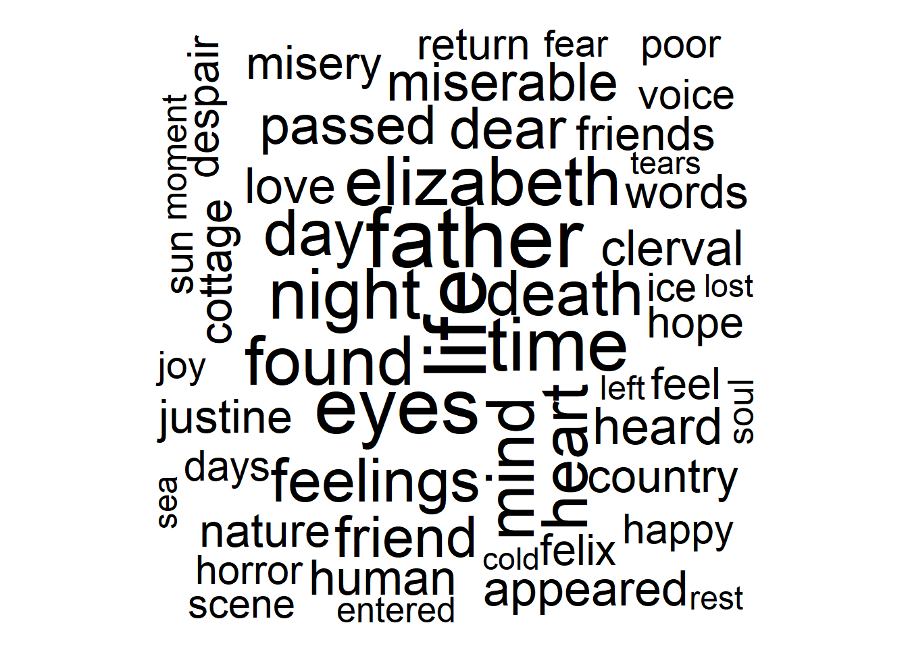
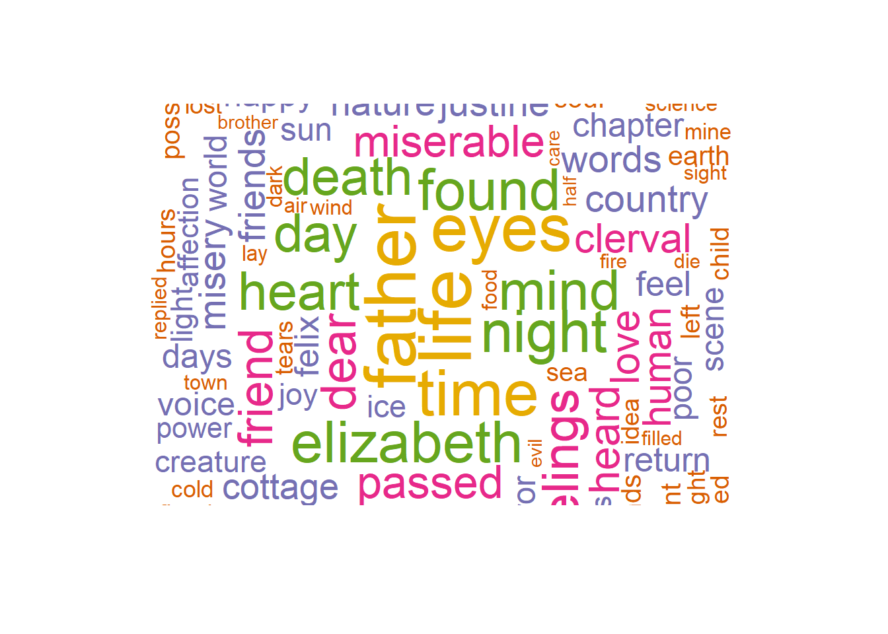
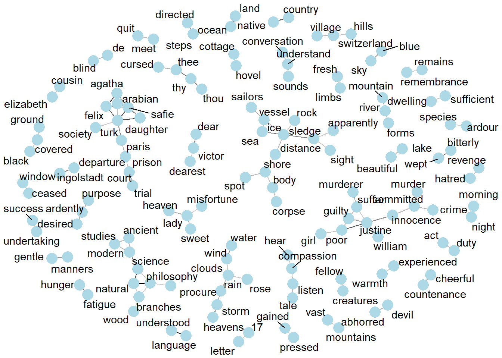

# How I obtained the three works from Project Gutenberg
# Notes:
# - might have to find mirror at https://www.gutenberg.org/MIRRORS.ALL
# - 84 = Frankenstein; 345 = Dracula; 43 = Jekyll and Hyde
# three_works <- gutenberg_download(
# c(84, 345, 43),
# meta_fields = "title",
# mirror = "http://mirror.csclub.uwaterloo.ca/gutenberg/")
# write_csv(three_works, "~/264_spring_2025/Data/three_works.csv")Text analysis
You can download this .qmd file from here. Just hit the Download Raw File button.
We will build on techniques you learned in SDS 164 using parts of Text Mining with R by Silge and Robinson.
Text analysis of books from Project Gutenberg
We will use the gutenbergr package to obtain several works from Project Gutenberg to examine using text analysis tools.
# three_works <- read_csv("https://joeroith.github.io/264_spring_2025/Data/three_works.csv")
# three_works2 <- read_csv("Data/three_works.csv")
library(RCurl)
Attaching package: 'RCurl'The following object is masked from 'package:tidyr':
completethree_works <- read_csv(
file = getURL("https://raw.githubusercontent.com/joeroith/264_spring_2025/refs/heads/main/Data/three_works.csv", .encoding = "UTF-8"))Rows: 25399 Columns: 3── Column specification ────────────────────────────────────────────────────────
Delimiter: ","
chr (2): text, title
dbl (1): gutenberg_id
ℹ Use `spec()` to retrieve the full column specification for this data.
ℹ Specify the column types or set `show_col_types = FALSE` to quiet this message.three_works |> count(title)# A tibble: 3 × 2
title n
<chr> <int>
1 Dracula 15491
2 Frankenstein; Or, The Modern Prometheus 7357
3 The Strange Case of Dr. Jekyll and Mr. Hyde 2551three_works# A tibble: 25,399 × 3
gutenberg_id text title
<dbl> <chr> <chr>
1 43 The Strange Case Of Dr. Jekyll And Mr. Hyde The Strange Case of…
2 43 <NA> The Strange Case of…
3 43 by Robert Louis Stevenson The Strange Case of…
4 43 <NA> The Strange Case of…
5 43 <NA> The Strange Case of…
6 43 Contents The Strange Case of…
7 43 <NA> The Strange Case of…
8 43 <NA> The Strange Case of…
9 43 STORY OF THE DOOR The Strange Case of…
10 43 <NA> The Strange Case of…
# ℹ 25,389 more rowsfrankenstein <- three_works |>
filter(str_detect(title, "Frankenstein"))We will begin by looking at a single book (Frankenstein) and then we’ll compare and contrast 3 books (Frankenstein, Dracula, and Jekyll and Hyde).
1. Tidy Text Mining!
Now it’s time to tokenize and tidy this text data.
tidy_book <- frankenstein |>
mutate(line = row_number()) |>
unnest_tokens(word, text, token = "words") # (new name, input)
# default for unnest_tokens is token = "words", but can also use
# "characters", "ngrams" with say n=2, "sentences", "regex" with
# pattern, "tweets" with strip_url, etc.
tidy_book # one row per word, instead of one per line# A tibble: 76,204 × 4
gutenberg_id title line word
<dbl> <chr> <int> <chr>
1 84 Frankenstein; Or, The Modern Prometheus 1 frankenstein
2 84 Frankenstein; Or, The Modern Prometheus 2 <NA>
3 84 Frankenstein; Or, The Modern Prometheus 3 or
4 84 Frankenstein; Or, The Modern Prometheus 3 the
5 84 Frankenstein; Or, The Modern Prometheus 3 modern
6 84 Frankenstein; Or, The Modern Prometheus 3 prometheus
7 84 Frankenstein; Or, The Modern Prometheus 4 <NA>
8 84 Frankenstein; Or, The Modern Prometheus 5 by
9 84 Frankenstein; Or, The Modern Prometheus 5 mary
10 84 Frankenstein; Or, The Modern Prometheus 5 wollstonecraft
# ℹ 76,194 more rowsfrankenstein |> slice_tail(n = 10)# A tibble: 10 × 3
gutenberg_id text title
<dbl> <chr> <chr>
1 84 shall die, and what I now feel be no longer felt. Soon th… Fran…
2 84 miseries will be extinct. I shall ascend my funeral pile … Fran…
3 84 exult in the agony of the torturing flames. The light of … Fran…
4 84 will fade away; my ashes will be swept into the sea by th… Fran…
5 84 will sleep in peace, or if it thinks, it will not surely … Fran…
6 84 Farewell.” Fran…
7 84 <NA> Fran…
8 84 He sprang from the cabin-window as he said this, upon the… Fran…
9 84 which lay close to the vessel. He was soon borne away by … Fran…
10 84 lost in darkness and distance. Fran…tidy_book |> slice_tail(n = 20)# A tibble: 20 × 4
gutenberg_id title line word
<dbl> <chr> <int> <chr>
1 84 Frankenstein; Or, The Modern Prometheus 7356 which
2 84 Frankenstein; Or, The Modern Prometheus 7356 lay
3 84 Frankenstein; Or, The Modern Prometheus 7356 close
4 84 Frankenstein; Or, The Modern Prometheus 7356 to
5 84 Frankenstein; Or, The Modern Prometheus 7356 the
6 84 Frankenstein; Or, The Modern Prometheus 7356 vessel
7 84 Frankenstein; Or, The Modern Prometheus 7356 he
8 84 Frankenstein; Or, The Modern Prometheus 7356 was
9 84 Frankenstein; Or, The Modern Prometheus 7356 soon
10 84 Frankenstein; Or, The Modern Prometheus 7356 borne
11 84 Frankenstein; Or, The Modern Prometheus 7356 away
12 84 Frankenstein; Or, The Modern Prometheus 7356 by
13 84 Frankenstein; Or, The Modern Prometheus 7356 the
14 84 Frankenstein; Or, The Modern Prometheus 7356 waves
15 84 Frankenstein; Or, The Modern Prometheus 7356 and
16 84 Frankenstein; Or, The Modern Prometheus 7357 lost
17 84 Frankenstein; Or, The Modern Prometheus 7357 in
18 84 Frankenstein; Or, The Modern Prometheus 7357 darkness
19 84 Frankenstein; Or, The Modern Prometheus 7357 and
20 84 Frankenstein; Or, The Modern Prometheus 7357 distanceWhat are the most common words?
tidy_book |>
count(word, sort = TRUE)# A tibble: 7,077 × 2
word n
<chr> <int>
1 the 4195
2 and 2976
3 i 2846
4 of 2642
5 to 2089
6 my 1776
7 a 1391
8 in 1128
9 was 1021
10 that 1017
# ℹ 7,067 more rowsStop words (get rid of common but not useful words)
Note: If you get “Error in loadNamespace(name) : there is no package called ‘stopwords’” or “The package ‘stopwords’ is required to use this function.”, first install package stopwords.
get_stopwords() |> print(n = 50) # snowball is default - somewhat smaller# A tibble: 175 × 2
word lexicon
<chr> <chr>
1 i snowball
2 me snowball
3 my snowball
4 myself snowball
5 we snowball
6 our snowball
7 ours snowball
8 ourselves snowball
9 you snowball
10 your snowball
11 yours snowball
12 yourself snowball
13 yourselves snowball
14 he snowball
15 him snowball
16 his snowball
17 himself snowball
18 she snowball
19 her snowball
20 hers snowball
21 herself snowball
22 it snowball
23 its snowball
24 itself snowball
25 they snowball
26 them snowball
27 their snowball
28 theirs snowball
29 themselves snowball
30 what snowball
31 which snowball
32 who snowball
33 whom snowball
34 this snowball
35 that snowball
36 these snowball
37 those snowball
38 am snowball
39 is snowball
40 are snowball
41 was snowball
42 were snowball
43 be snowball
44 been snowball
45 being snowball
46 have snowball
47 has snowball
48 had snowball
49 having snowball
50 do snowball
# ℹ 125 more rowsget_stopwords(source = "smart") |> print(n = 50) # A tibble: 571 × 2
word lexicon
<chr> <chr>
1 a smart
2 a's smart
3 able smart
4 about smart
5 above smart
6 according smart
7 accordingly smart
8 across smart
9 actually smart
10 after smart
11 afterwards smart
12 again smart
13 against smart
14 ain't smart
15 all smart
16 allow smart
17 allows smart
18 almost smart
19 alone smart
20 along smart
21 already smart
22 also smart
23 although smart
24 always smart
25 am smart
26 among smart
27 amongst smart
28 an smart
29 and smart
30 another smart
31 any smart
32 anybody smart
33 anyhow smart
34 anyone smart
35 anything smart
36 anyway smart
37 anyways smart
38 anywhere smart
39 apart smart
40 appear smart
41 appreciate smart
42 appropriate smart
43 are smart
44 aren't smart
45 around smart
46 as smart
47 aside smart
48 ask smart
49 asking smart
50 associated smart
# ℹ 521 more rows# will sometimes want to store if using over and over
# - later with shiny apps will have to store and write as data file
smart_stopwords <- get_stopwords(source = "smart")Try out using different languages (language) and different lexicons (source).
Another try at most common words
tidy_book |>
anti_join(smart_stopwords) |>
count(word, sort = TRUE) |>
filter(word != "NA") |>
slice_max(n, n = 20) |>
ggplot(aes(fct_reorder(word, n), n)) +
geom_col() +
coord_flip()Joining with `by = join_by(word)`Sentiment analysis
Explore some sentiment lexicons. You’ll want to match your choice of sentiment lexicon to your purpose:
- afinn: scored from -5 (very negative) to +5 (very positive)
- nrc: words are labeled with emotions like anger, fear, sadness, etc. There can be more than one row per word.
- bing: binary - listed words are either negative or positive
get_sentiments(lexicon = "afinn")# A tibble: 2,477 × 2
word value
<chr> <dbl>
1 abandon -2
2 abandoned -2
3 abandons -2
4 abducted -2
5 abduction -2
6 abductions -2
7 abhor -3
8 abhorred -3
9 abhorrent -3
10 abhors -3
# ℹ 2,467 more rowsget_sentiments(lexicon = "nrc")# A tibble: 13,872 × 2
word sentiment
<chr> <chr>
1 abacus trust
2 abandon fear
3 abandon negative
4 abandon sadness
5 abandoned anger
6 abandoned fear
7 abandoned negative
8 abandoned sadness
9 abandonment anger
10 abandonment fear
# ℹ 13,862 more rowsget_sentiments(lexicon = "bing")# A tibble: 6,786 × 2
word sentiment
<chr> <chr>
1 2-faces negative
2 abnormal negative
3 abolish negative
4 abominable negative
5 abominably negative
6 abominate negative
7 abomination negative
8 abort negative
9 aborted negative
10 aborts negative
# ℹ 6,776 more rowsbing_sentiments <- get_sentiments(lexicon = "bing")Implement sentiment analysis using an inner_join(), so you only consider words both in your text and in the lexicon.
tidy_book |>
inner_join(bing_sentiments) |>
count(sentiment)Joining with `by = join_by(word)`# A tibble: 2 × 2
sentiment n
<chr> <int>
1 negative 3742
2 positive 2983What words contribute the most to sentiment scores for Frankenstein? Let’s walk through this pipe step-by-step.
tidy_book |>
inner_join(bing_sentiments) |>
count(sentiment, word, sort = TRUE) |>
group_by(sentiment) |>
slice_max(n, n = 10) |>
ungroup() |>
ggplot(aes(x = fct_reorder(word, n), y = n, fill = sentiment)) +
geom_col() +
coord_flip() +
facet_wrap(~ sentiment, scales = "free")Joining with `by = join_by(word)`# Check out which words are associated with specific nrc emotions
get_sentiments("nrc") |>
count(sentiment)# A tibble: 10 × 2
sentiment n
<chr> <int>
1 anger 1245
2 anticipation 837
3 disgust 1056
4 fear 1474
5 joy 687
6 negative 3316
7 positive 2308
8 sadness 1187
9 surprise 532
10 trust 1230get_sentiments("nrc") |>
filter(sentiment == "joy") |>
inner_join(tidy_book) |>
count(word, sort = TRUE)Joining with `by = join_by(word)`# A tibble: 308 × 2
word n
<chr> <int>
1 found 87
2 friend 71
3 love 59
4 hope 50
5 happiness 49
6 happy 46
7 sun 45
8 joy 42
9 affection 40
10 journey 36
# ℹ 298 more rowsget_sentiments("nrc") |>
filter(sentiment == "anger") |>
inner_join(tidy_book) |>
count(word, sort = TRUE)Joining with `by = join_by(word)`# A tibble: 370 × 2
word n
<chr> <int>
1 death 79
2 miserable 65
3 misery 54
4 words 54
5 despair 49
6 horror 45
7 fear 40
8 possessed 36
9 fiend 33
10 feeling 27
# ℹ 360 more rowsMake a wordcloud for Frankenstein.
# wordcloud wants a column with words and another column with counts
words <- tidy_book |>
anti_join(stop_words) |>
count(word) |>
filter(word != "NA") |>
arrange(desc(n))
# Note: this will look better in html than in the Plots window in RStudio
wordcloud(
words = words$word,
freq = words$n,
max.words = 100,
random.order = FALSE
)
# Some alternative options (see Solveig's R tip of the day for more!)
wordcloud(
words = words$word,
freq = words$n,
max.words = 200,
random.order = FALSE,
rot.per = 0.35,
scale = c(3.5, 0.25),
colors = brewer.pal(6, "Dark2"))
# Or for even cooler looks, use wordcloud2 (for html documents)
words_df <- words |>
slice_head(n = 80) |>
data.frame()
wordcloud2(
words_df,
size = .25,
shape = 'circle',
minSize = 10
)# A couple of helpful links for customizing wordclouds:
# https://www.youtube.com/watch?v=0cToDzeDLRI
# https://towardsdatascience.com/create-a-word-cloud-with-r-bde3e7422e8aYou could do cool stuff here, like color the words by sentiment!
2. What is a document about?
Above, we read in a corpus called three_works. We’ll use that here!
Count the word frequencies by title in this collection.
book_words <- three_works |>
group_by(title) |>
mutate(linenumber = row_number()) |>
ungroup() |>
unnest_tokens(word, text)
book_word_count <- book_words |>
count(word, title, sort = TRUE)
book_word_count# A tibble: 20,714 × 3
word title n
<chr> <chr> <int>
1 the Dracula 7915
2 and Dracula 5907
3 i Dracula 4801
4 to Dracula 4666
5 the Frankenstein; Or, The Modern Prometheus 4195
6 of Dracula 3634
7 and Frankenstein; Or, The Modern Prometheus 2976
8 a Dracula 2954
9 i Frankenstein; Or, The Modern Prometheus 2846
10 of Frankenstein; Or, The Modern Prometheus 2642
# ℹ 20,704 more rowsLook at positive/negative sentiment trajectory over the novels
book_words |>
inner_join(bing_sentiments) |>
count(title, index = linenumber %/% 80, sentiment) |>
# index approximates a chapter (every 80 lines)
pivot_wider(names_from = sentiment, values_from = n, values_fill = 0) |>
mutate(sentiment = positive - negative) |>
ggplot(aes(x = index, y = sentiment, fill = title)) +
geom_col(show.legend = FALSE) +
facet_wrap(~title, ncol = 2, scales = "free_x")Joining with `by = join_by(word)`Calculate tf-idf.
The tf-idf statistic is term frequency times inverse document frequency, a quantity used for identifying terms that are especially important to a particular document. The idea of tf-idf is to find the important words for the content of each document by decreasing the weight for commonly used words and increasing the weight for words that are not used very much in a collection or corpus of documents. We want to find words that define one document as opposed to others.
- tf = term frequency = proportion of times a term appears in a document.
- idf = inverse document frequency = log(number of documents / number of documents with the term), so that terms that appear in fewer documents are weighted higher, since those rarer words provide more information.
There’s really no theory behind multiplying the two together - it just tends to work in practice. See this wikipedia entry for more details. (See also this site for a nice description of weaknesses of tf-idf.)
book_tfidf <- book_word_count |>
bind_tf_idf(word, title, n)
book_tfidf # note idf = 0 when it appears in every document# A tibble: 20,714 × 6
word title n tf idf tf_idf
<chr> <chr> <int> <dbl> <dbl> <dbl>
1 the Dracula 7915 0.0480 0 0
2 and Dracula 5907 0.0358 0 0
3 i Dracula 4801 0.0291 0 0
4 to Dracula 4666 0.0283 0 0
5 the Frankenstein; Or, The Modern Prometheus 4195 0.0550 0 0
6 of Dracula 3634 0.0220 0 0
7 and Frankenstein; Or, The Modern Prometheus 2976 0.0391 0 0
8 a Dracula 2954 0.0179 0 0
9 i Frankenstein; Or, The Modern Prometheus 2846 0.0373 0 0
10 of Frankenstein; Or, The Modern Prometheus 2642 0.0347 0 0
# ℹ 20,704 more rowsFind high tf-idf words. The highest words will appear relatively often in one document, but not at all in others.
book_tfidf |>
arrange(-tf_idf)# A tibble: 20,714 × 6
word title n tf idf tf_idf
<chr> <chr> <int> <dbl> <dbl> <dbl>
1 utterson The Strange Case of Dr. Jekyll and Mr.… 128 0.00489 1.10 0.00537
2 jekyll The Strange Case of Dr. Jekyll and Mr.… 84 0.00321 1.10 0.00353
3 poole The Strange Case of Dr. Jekyll and Mr.… 61 0.00233 1.10 0.00256
4 van Dracula 323 0.00196 1.10 0.00215
5 helsing Dracula 301 0.00182 1.10 0.00200
6 hyde The Strange Case of Dr. Jekyll and Mr.… 98 0.00375 0.405 0.00152
7 lucy Dracula 223 0.00135 1.10 0.00148
8 mina Dracula 210 0.00127 1.10 0.00140
9 elizabeth Frankenstein; Or, The Modern Prometheus 88 0.00115 1.10 0.00127
10 jonathan Dracula 181 0.00110 1.10 0.00120
# ℹ 20,704 more rowsHow can we visualize this? Let’s go step-by-step.
book_tfidf |>
group_by(title) |>
arrange(desc(tf_idf)) |>
slice_max(tf_idf, n = 10) |>
ungroup() |>
ggplot(aes(x = fct_reorder(word, tf_idf), y = tf_idf, fill = title)) +
geom_col(show.legend = FALSE) +
coord_flip() +
facet_wrap(~title, scales = "free")# kind of boring - mostly proper nounsN-grams… and beyond!
Let’s return to Frankenstein and look at 2-word combinations:
tidy_ngram <- frankenstein |>
unnest_tokens(bigram, text, token = "ngrams", n = 2) |>
filter(bigram != "NA")
tidy_ngram# A tibble: 68,847 × 3
gutenberg_id title bigram
<dbl> <chr> <chr>
1 84 Frankenstein; Or, The Modern Prometheus or the
2 84 Frankenstein; Or, The Modern Prometheus the modern
3 84 Frankenstein; Or, The Modern Prometheus modern prometheus
4 84 Frankenstein; Or, The Modern Prometheus by mary
5 84 Frankenstein; Or, The Modern Prometheus mary wollstonecraft
6 84 Frankenstein; Or, The Modern Prometheus wollstonecraft godwin
7 84 Frankenstein; Or, The Modern Prometheus godwin shelley
8 84 Frankenstein; Or, The Modern Prometheus letter 1
9 84 Frankenstein; Or, The Modern Prometheus letter 2
10 84 Frankenstein; Or, The Modern Prometheus letter 3
# ℹ 68,837 more rowsWhat are the most common bigrams?
tidy_ngram |>
count(bigram, sort = TRUE)# A tibble: 38,574 × 2
bigram n
<chr> <int>
1 of the 501
2 of my 264
3 in the 246
4 i was 213
5 i had 207
6 that i 198
7 and i 192
8 and the 182
9 to the 181
10 which i 145
# ℹ 38,564 more rowsLet’s use separate() from tidyr to remove stop words.
# stop_words contains 1149 words from 3 lexicons
bigrams_filtered <- tidy_ngram |>
separate(bigram, c("word1", "word2"), sep = " ") |>
filter(!word1 %in% stop_words$word,
!word2 %in% stop_words$word) |>
count(word1, word2, sort = TRUE)
bigrams_filtered# A tibble: 4,677 × 3
word1 word2 n
<chr> <chr> <int>
1 natural philosophy 11
2 dear victor 10
3 native country 10
4 de lacey 9
5 fellow creatures 8
6 poor girl 8
7 mont blanc 7
8 native town 6
9 cornelius agrippa 5
10 countenance expressed 5
# ℹ 4,667 more rowsNow extend from a single document to our collection of documents. See which two-word combinations best identify books in the collection.
book_twowords <- three_works |>
group_by(title) |>
mutate(linenumber = row_number()) |>
ungroup() |>
unnest_tokens(bigram, text, token = "ngrams", n = 2) |>
filter(bigram != "NA")
book_twowords |>
count(bigram, sort = TRUE)# A tibble: 102,837 × 2
bigram n
<chr> <int>
1 of the 1494
2 in the 952
3 to the 596
4 and the 579
5 and i 554
6 it was 526
7 that i 526
8 on the 507
9 i was 484
10 i had 461
# ℹ 102,827 more rowsbigrams_filtered <- book_twowords |>
separate(bigram, c("word1", "word2"), sep = " ") |>
filter(!word1 %in% stop_words$word,
!word2 %in% stop_words$word) |>
count(word1, word2, sort = TRUE) |>
filter(!is.na(word1) & !is.na(word2))
bigrams_filtered # A tibble: 13,951 × 3
word1 word2 n
<chr> <chr> <int>
1 van helsing 282
2 madam mina 82
3 lord godalming 63
4 dr van 60
5 dr seward 55
6 friend john 54
7 seward's diary 39
8 poor dear 34
9 harker's journal 31
10 _dr seward's 26
# ℹ 13,941 more rowsbigrams_united <- bigrams_filtered |>
unite(bigram, word1, word2, sep = " ")
bigrams_united # A tibble: 13,951 × 2
bigram n
<chr> <int>
1 van helsing 282
2 madam mina 82
3 lord godalming 63
4 dr van 60
5 dr seward 55
6 friend john 54
7 seward's diary 39
8 poor dear 34
9 harker's journal 31
10 _dr seward's 26
# ℹ 13,941 more rowsbigram_tf_idf <- book_twowords |>
count(title, bigram) |>
bind_tf_idf(bigram, title, n) |>
arrange(desc(tf_idf))
bigram_tf_idf |> arrange(desc(tf_idf))# A tibble: 119,039 × 6
title bigram n tf idf tf_idf
<chr> <chr> <int> <dbl> <dbl> <dbl>
1 The Strange Case of Dr. Jekyll and Mr. Hy… mr ut… 69 2.92e-3 1.10 3.21e-3
2 The Strange Case of Dr. Jekyll and Mr. Hy… the l… 61 2.58e-3 1.10 2.84e-3
3 Dracula van h… 282 1.88e-3 1.10 2.07e-3
4 The Strange Case of Dr. Jekyll and Mr. Hy… mr hy… 29 1.23e-3 1.10 1.35e-3
5 The Strange Case of Dr. Jekyll and Mr. Hy… dr je… 23 9.74e-4 1.10 1.07e-3
6 The Strange Case of Dr. Jekyll and Mr. Hy… henry… 22 9.32e-4 1.10 1.02e-3
7 The Strange Case of Dr. Jekyll and Mr. Hy… edwar… 20 8.47e-4 1.10 9.30e-4
8 Dracula the c… 121 8.08e-4 1.10 8.88e-4
9 The Strange Case of Dr. Jekyll and Mr. Hy… the c… 16 6.78e-4 1.10 7.44e-4
10 The Strange Case of Dr. Jekyll and Mr. Hy… of ed… 14 5.93e-4 1.10 6.51e-4
# ℹ 119,029 more rowsbigram_tf_idf |>
group_by(title) |>
arrange(desc(tf_idf)) |>
slice_max(tf_idf, n = 10) |>
ungroup() |>
ggplot(aes(x = fct_reorder(bigram, tf_idf), y = tf_idf, fill = title)) +
geom_col(show.legend = FALSE) +
coord_flip() +
facet_wrap(~title, scales = "free")Sentence context using bigrams
Bigrams can also help us dive deeper into sentiment analysis. For example, even though “happy” carries positive sentiment, but when preceded by “not” as in this sentence: “I am not happy with you!” it conveys negative sentiment. Context can matter as much as mere presence!
Let’s see which words associated with an afinn sentiment are most frequently preceded by “not”:
afinn <- get_sentiments("afinn")
bigrams_separated <- book_twowords |>
separate(bigram, c("word1", "word2"), sep = " ") |>
count(word1, word2, sort = TRUE) |>
filter(!is.na(word1) & !is.na(word2))
bigrams_separated |> filter(word1 == "not")# A tibble: 582 × 3
word1 word2 n
<chr> <chr> <int>
1 not be 77
2 not to 74
3 not know 62
4 not so 38
5 not have 36
6 not a 35
7 not yet 34
8 not the 31
9 not for 29
10 not been 26
# ℹ 572 more rowsnot_words <- bigrams_separated |>
filter(word1 == "not") |>
inner_join(afinn, by = c(word2 = "word")) |>
arrange(desc(n))
not_words# A tibble: 123 × 4
word1 word2 n value
<chr> <chr> <int> <dbl>
1 not like 19 2
2 not want 14 1
3 not fear 13 -2
4 not help 11 2
5 not wish 9 1
6 not afraid 7 -2
7 not care 7 2
8 not fail 7 -2
9 not leave 7 -1
10 not despair 6 -3
# ℹ 113 more rowsWe could then ask which words contributed the most in the “wrong” direction. One approach is to multiply their value by the number of times they appear (so that a word with a value of +3 occurring 10 times has as much impact as a word with a sentiment value of +1 occurring 30 times).
not_words |>
mutate(contribution = n * value) |>
arrange(desc(abs(contribution))) |>
head(20) |>
mutate(word2 = reorder(word2, contribution)) |>
ggplot(aes(n * value, word2, fill = n * value > 0)) +
geom_col(show.legend = FALSE) +
labs(x = "Sentiment value * number of occurrences",
y = "Words preceded by \"not\"")
With this approach, we could expand our list of negation words, and then possibly even adjust afinn totals to reflect context!
# An example of expanding the list of negation words
negation_words <- c("not", "no", "never", "without")
negated_words <- bigrams_separated |>
filter(word1 %in% negation_words) |>
inner_join(afinn, by = c(word2 = "word")) |>
arrange(desc(n))
negated_words# A tibble: 232 × 4
word1 word2 n value
<chr> <chr> <int> <dbl>
1 not like 19 2
2 not want 14 1
3 not fear 13 -2
4 no matter 12 1
5 no doubt 11 -1
6 no no 11 -1
7 not help 11 2
8 no fear 9 -2
9 not wish 9 1
10 not afraid 7 -2
# ℹ 222 more rowsnegated_words |>
mutate(contribution = n * value) |>
arrange(desc(abs(contribution))) |>
group_by(word1) |>
slice_max(abs(contribution), n = 10) |>
ungroup() |>
mutate(word2 = reorder(word2, contribution)) |>
ggplot(aes(n * value, word2, fill = n * value > 0)) +
geom_col(show.legend = FALSE) +
facet_wrap(~ word1, scales = "free") +
labs(x = "Sentiment value * number of occurrences",
y = "Words preceded by negation term")Creating a network graph
If we are interested in visualizing all relationships among words or bigrams, we can arrange the words into a network, which is a combination of connected nodes. A network graph has three elements:
- from: the node an edge is coming from
- to: the node an edge is going towards
- weight: A numeric value associated with each edge
The igraph package has many powerful functions for manipulating and analyzing networks. One way to create an igraph object from tidy data is the graph_from_data_frame() function. Let’s see how it works using Frankenstein:
library(igraph)
# filter for only relatively common combinations
bigram_graph <- bigrams_filtered |>
filter(n > 10) |>
graph_from_data_frame()
bigram_graphIGRAPH f7e450c DN-- 37 27 --
+ attr: name (v/c), n (e/n)
+ edges from f7e450c (vertex names):
[1] van ->helsing madam ->mina lord ->godalming
[4] dr ->van dr ->seward friend ->john
[7] seward's->diary poor ->dear harker's->journal
[10] _dr ->seward's dear ->madam miss ->lucy
[13] dr ->jekyll henry ->jekyll poor ->lucy
[16] quincey ->morris edward ->hyde dr ->seward's
[19] van ->helsing's _czarina->catherine_ poor ->fellow
[22] _mina ->harker's poor ->girl dr ->seward’s
+ ... omitted several edges# Use ggraph to convert into a network plot
library(ggraph)
set.seed(2017)
ggraph(bigram_graph, layout = "fr") +
geom_edge_link() +
geom_node_point() +
geom_node_text(aes(label = name), vjust = 1, hjust = 1)
# polish the graph
set.seed(2020)
a <- grid::arrow(type = "closed", length = unit(.15, "inches"))
ggraph(bigram_graph, layout = "fr") +
geom_edge_link(aes(edge_alpha = n), show.legend = FALSE,
arrow = a, end_cap = circle(.07, 'inches')) +
geom_node_point(color = "lightblue", size = 5) +
geom_node_text(aes(label = name), vjust = 1, hjust = 1) +
theme_void()Correlating pairs of words
Tokenizing by n-gram is a useful way to explore pairs of adjacent words. However, we may also be interested in words that tend to co-occur within particular documents or particular chapters, even if they don’t occur next to each other. Following Section 4.2 of Text Mining with R, we will use the widyr package.
Consider the book “Frankenstein” divided into 10-line sections. We may be interested in what words tend to appear within the same section.
frankenstein_section_words <- frankenstein |>
select(-gutenberg_id) |>
mutate(section = row_number() %/% 10) |>
filter(section > 0) |>
unnest_tokens(word, text) |>
filter(!word %in% stop_words$word,
!is.na(word))
frankenstein_section_words # A tibble: 27,313 × 3
title section word
<chr> <dbl> <chr>
1 Frankenstein; Or, The Modern Prometheus 1 letter
2 Frankenstein; Or, The Modern Prometheus 1 1
3 Frankenstein; Or, The Modern Prometheus 1 letter
4 Frankenstein; Or, The Modern Prometheus 1 2
5 Frankenstein; Or, The Modern Prometheus 1 letter
6 Frankenstein; Or, The Modern Prometheus 1 3
7 Frankenstein; Or, The Modern Prometheus 1 letter
8 Frankenstein; Or, The Modern Prometheus 1 4
9 Frankenstein; Or, The Modern Prometheus 1 chapter
10 Frankenstein; Or, The Modern Prometheus 1 1
# ℹ 27,303 more rows# count words co-occuring within sections
library(widyr)Warning: package 'widyr' was built under R version 4.5.1word_pairs <- frankenstein_section_words |>
pairwise_count(word, section, sort = TRUE)
word_pairs# A tibble: 856,676 × 3
item1 item2 n
<chr> <chr> <dbl>
1 elizabeth father 20
2 father elizabeth 20
3 life death 19
4 death life 19
5 eyes life 18
6 justine poor 18
7 life eyes 18
8 poor justine 18
9 elizabeth dear 17
10 native country 17
# ℹ 856,666 more rows# What words occur most often with "life"?
word_pairs |>
filter(item1 == "life")# A tibble: 2,330 × 3
item1 item2 n
<chr> <chr> <dbl>
1 life death 19
2 life eyes 18
3 life friend 16
4 life father 16
5 life mind 14
6 life day 13
7 life feelings 13
8 life found 13
9 life time 12
10 life passed 12
# ℹ 2,320 more rowsWe can quantify pairwise correlation using the Phi coefficient (which simplifies to the Pearson correlation coefficient with numeric data). The Phi coefficient measures how often two words appear together relative to how often they appear separately (so we don’t just pick up the most common words).
# we need to filter for at least relatively common words first
word_cors <- frankenstein_section_words |>
group_by(word) |>
filter(n() >= 10) |>
pairwise_cor(word, section, sort = TRUE)
word_cors# A tibble: 406,406 × 3
item1 item2 correlation
<chr> <chr> <dbl>
1 philosophy natural 0.703
2 natural philosophy 0.703
3 thou thy 0.550
4 thy thou 0.550
5 understood language 0.499
6 language understood 0.499
7 felix agatha 0.470
8 agatha felix 0.470
9 creatures fellow 0.465
10 fellow creatures 0.465
# ℹ 406,396 more rows# What words are most correlated with "life"?
word_cors |>
filter(item1 == "life")# A tibble: 637 × 3
item1 item2 correlation
<chr> <chr> <dbl>
1 life story 0.120
2 life bestowed 0.120
3 life frame 0.112
4 life death 0.111
5 life purpose 0.109
6 life dream 0.109
7 life creation 0.109
8 life deprived 0.108
9 life hideous 0.108
10 life money 0.105
# ℹ 627 more rowsPlot words most associated with a set of interesting words:
word_cors |>
filter(item1 %in% c("life", "death", "father", "eyes")) |>
group_by(item1) |>
slice_max(correlation, n = 6) |>
ungroup() |>
mutate(item2 = reorder(item2, correlation)) |>
ggplot(aes(item2, correlation)) +
geom_bar(stat = "identity") +
facet_wrap(~ item1, scales = "free") +
coord_flip()Finally, create a network graph to visualize the correlations and clusters of words that were found by the widyr package
set.seed(2016)
word_cors |>
filter(correlation > .25) |>
graph_from_data_frame() |>
ggraph(layout = "fr") +
geom_edge_link(aes(edge_alpha = correlation), show.legend = FALSE) +
geom_node_point(color = "lightblue", size = 5) +
geom_node_text(aes(label = name), repel = TRUE) +
theme_void()
Topic Modeling
As described in Ch 6 of Text Mining with R:
In text mining, we often have collections of documents, such as blog posts or news articles, that we’d like to divide into natural groups so that we can understand them separately. Topic modeling is a method for unsupervised classification of such documents, similar to clustering on numeric data, which finds natural groups of items even when we’re not sure what we’re looking for.
Latent Dirichlet allocation (LDA) is a particularly popular method for fitting a topic model. It treats each document as a mixture of topics, and each topic as a mixture of words. This allows documents to “overlap” each other in terms of content, rather than being separated into discrete groups, in a way that mirrors typical use of natural language.
We will attempt to apply LDA to our collection of three works. While not a typical application of topic modeling, it’ll be interesting to see if any common themes or groupings emerge.
Again, from Ch 6:
Latent Dirichlet allocation is one of the most common algorithms for topic modeling. Without diving into the math behind the model, we can understand it as being guided by two principles.
Every document is a mixture of topics. We imagine that each document may contain words from several topics in particular proportions. For example, in a two-topic model we could say “Document 1 is 90% topic A and 10% topic B, while Document 2 is 30% topic A and 70% topic B.”
Every topic is a mixture of words. For example, we could imagine a two-topic model of American news, with one topic for “politics” and one for “entertainment.” The most common words in the politics topic might be “President”, “Congress”, and “government”, while the entertainment topic may be made up of words such as “movies”, “television”, and “actor”. Importantly, words can be shared between topics; a word like “budget” might appear in both equally.
LDA is a mathematical method for estimating both of these at the same time: finding the mixture of words that is associated with each topic, while also determining the mixture of topics that describes each document.
In order to implement LDA on our three books, we need to first “cast” our tidy data as a document-term matrix (DTM) where:
- each row represents one document (such as a book or article),
- each column represents one term, and
- each value (typically) contains the number of appearances of that term in that document.
From Section 5.2 of Text Mining with R:
Since most pairings of document and term do not occur (they have the value zero), DTMs are usually implemented as sparse matrices. These objects can be treated as though they were matrices (for example, accessing particular rows and columns), but are stored in a more efficient format.
DTM objects cannot be used directly with tidy tools, just as tidy data frames cannot be used as input for most text mining packages. Thus, the tidytext package provides two verbs (
tidyandcast) that convert between the two formats.
A DTM is typically comparable to a tidy data frame after a count or a group_by/summarize that contains counts or another statistic for each combination of a term and document.
# cast the collection of 3 works as a document-term matrix
library(tm)Warning: package 'tm' was built under R version 4.5.1Loading required package: NLP
Attaching package: 'NLP'The following object is masked from 'package:ggplot2':
annotatethree_books_dtm <- book_word_count |>
filter(!word %in% stop_words$word,
!is.na(word)) |>
cast_dtm(title, word, n)
# set a seed so that the output of the model is predictable
library(topicmodels)Warning: package 'topicmodels' was built under R version 4.5.1three_books_lda <- LDA(three_books_dtm, k = 2, control = list(seed = 1234))
three_books_ldaA LDA_VEM topic model with 2 topics.After fitting our LDA model, we will first focus on the beta variable, which is the probability of a word being generated by a specific topic. Then we’ll turn to the gamma variable, which are the per-document per-topic probabilities, or the proportion of words from a document generated by a specific topic.
three_books_topics <- tidy(three_books_lda, matrix = "beta")
three_books_topics# A tibble: 25,968 × 3
topic term beta
<int> <chr> <dbl>
1 1 time 3.58e- 3
2 2 time 8.03e- 3
3 1 van 1.26e-14
4 2 van 6.65e- 3
5 1 night 3.41e- 3
6 2 night 6.39e- 3
7 1 helsing 1.91e-14
8 2 helsing 6.20e- 3
9 1 dear 2.18e- 3
10 2 dear 4.61e- 3
# ℹ 25,958 more rows# Find the most common words within each topic
three_books_top_terms <- three_books_topics |>
group_by(topic) |>
slice_max(beta, n = 10) |>
ungroup() |>
arrange(topic, -beta)
three_books_top_terms |>
mutate(term = reorder_within(term, beta, topic)) |>
ggplot(aes(beta, term, fill = factor(topic))) +
geom_col(show.legend = FALSE) +
facet_wrap(~ topic, scales = "free") +
scale_y_reordered()# This would be much cooler with more documents and if we were able
# to anti_join to remove proper nouns
# Find words with greatest difference between two topics, using log ratio
beta_wide <- three_books_topics |>
mutate(topic = paste0("topic", topic)) |>
pivot_wider(names_from = topic, values_from = beta) |>
filter(topic1 > .001 | topic2 > .001) |>
mutate(log_ratio = log2(topic2 / topic1))
beta_wide# A tibble: 196 × 4
term topic1 topic2 log_ratio
<chr> <dbl> <dbl> <dbl>
1 time 3.58e- 3 0.00803 1.17
2 van 1.26e-14 0.00665 38.9
3 night 3.41e- 3 0.00639 0.906
4 helsing 1.91e-14 0.00620 38.2
5 dear 2.18e- 3 0.00461 1.08
6 lucy 5.62e-14 0.00459 36.3
7 day 2.99e- 3 0.00455 0.607
8 hand 1.98e- 3 0.00433 1.12
9 mina 2.40e-14 0.00433 37.4
10 door 2.12e- 3 0.00412 0.956
# ℹ 186 more rowsbeta_wide |>
arrange(desc(abs(log_ratio))) |>
slice_max(abs(log_ratio), n = 20) |>
mutate(term = reorder(term, log_ratio)) |>
ggplot(aes(log_ratio, term, fill = log_ratio > 0)) +
geom_col(show.legend = FALSE) +
labs(x = "Log ratio of Beta values",
y = "Words in three works")# find the gamma variable for each document and topic
three_books_documents <- tidy(three_books_lda, matrix = "gamma")
three_books_documents# A tibble: 6 × 3
document topic gamma
<chr> <int> <dbl>
1 Dracula 1 0.000158
2 The Strange Case of Dr. Jekyll and Mr. Hyde 1 1.00
3 Frankenstein; Or, The Modern Prometheus 1 1.00
4 Dracula 2 1.00
5 The Strange Case of Dr. Jekyll and Mr. Hyde 2 0.00000613
6 Frankenstein; Or, The Modern Prometheus 2 0.00000190# Dracula = Topic 2; other two books = Topic 1!On Your Own: Harry Potter
The potter_untidy dataset includes the text of 7 books of the Harry Potter series by J.K. Rowling. For a brief overview of the books (or movies), see this quote from Wikipedia:
Harry Potter is a series of seven fantasy novels written by British author J. K. Rowling. The novels chronicle the lives of a young wizard, Harry Potter, and his friends Hermione Granger and Ron Weasley, all of whom are students at Hogwarts School of Witchcraft and Wizardry. The main story arc concerns Harry’s conflict with Lord Voldemort, a dark wizard who intends to become immortal, overthrow the wizard governing body known as the Ministry of Magic, and subjugate all wizards and Muggles (non-magical people).
A few analyses from SDS 164:
# 10 most common words in each book, excluding stop words
potter_tidy |>
count(title, word) |>
anti_join(stop_words) |>
group_by(title) |>
slice_max(n, n = 10) |>
mutate(rank = 1:10) |>
select(-n) |>
pivot_wider (names_from = title, values_from = word) |>
print(width = Inf)Joining with `by = join_by(word)`# A tibble: 10 × 8
rank `Sorcerer's Stone` `Chamber of Secrets` `Prisoner of Azkaban`
<int> <chr> <chr> <chr>
1 1 harry harry harry
2 2 ron ron ron
3 3 hagrid hermione hermione
4 4 hermione malfoy professor
5 5 professor lockhart lupin
6 6 looked professor black
7 7 snape weasley looked
8 8 dumbledore looked hagrid
9 9 uncle time snape
10 10 time eyes harry's
`Goblet of Fire` `Order of the Phoenix` `Half-Blood Prince` `Deathly Hallows`
<chr> <chr> <chr> <chr>
1 harry harry harry harry
2 ron hermione dumbledore hermione
3 hermione ron ron ron
4 dumbledore sirius hermione wand
5 looked professor looked dumbledore
6 weasley dumbledore slughorn looked
7 hagrid looked snape voldemort
8 eyes umbridge malfoy eyes
9 moody weasley time death
10 professor voice professor time # Repeat above after removing character first and last names
potter_tidy |>
count(title, word) |>
anti_join(stop_words) |>
anti_join(potter_names, join_by(word == firstname)) |>
anti_join(potter_names, join_by(word == lastname)) |>
group_by(title) |>
slice_max(n, n = 10, with_ties = FALSE) |>
mutate(rank = 1:10) |>
select(-n) |>
pivot_wider (names_from = title, values_from = word) |>
print(width = Inf)Joining with `by = join_by(word)`# A tibble: 10 × 8
rank `Sorcerer's Stone` `Chamber of Secrets` `Prisoner of Azkaban`
<int> <chr> <chr> <chr>
1 1 professor professor professor
2 2 looked looked looked
3 3 uncle time harry's
4 4 time eyes eyes
5 5 harry's harry's time
6 6 door dobby door
7 7 eyes door head
8 8 yeh head voice
9 9 head voice heard
10 10 told school hand
`Goblet of Fire` `Order of the Phoenix` `Half-Blood Prince` `Deathly Hallows`
<chr> <chr> <chr> <chr>
1 looked professor looked wand
2 eyes looked time looked
3 professor voice professor eyes
4 crouch time hand death
5 time door eyes time
6 wand head voice voice
7 voice harry's dark harry's
8 head eyes wand door
9 told wand door hand
10 harry's hand head head # still get "harry's" and "professor" but otherwise looks good
# top 10 names in each book (after excluding "the")
potter_tidy |>
count(title, word) |>
semi_join(potter_names, join_by(word == firstname)) |>
filter(word != "the") |> # ADD for #6
group_by(title) |>
slice_max(n, n = 10, with_ties = FALSE) |>
mutate(rank = 1:10) |>
select(-n) |>
pivot_wider (names_from = title, values_from = word) |>
print(width = Inf)# A tibble: 10 × 8
rank `Sorcerer's Stone` `Chamber of Secrets` `Prisoner of Azkaban`
<int> <chr> <chr> <chr>
1 1 harry harry harry
2 2 ron ron ron
3 3 hermione hermione hermione
4 4 dudley fred sirius
5 5 vernon ginny neville
6 6 neville sir madam
7 7 great george great
8 8 petunia great fred
9 9 nearly percy vernon
10 10 madam nearly percy
`Goblet of Fire` `Order of the Phoenix` `Half-Blood Prince` `Deathly Hallows`
<chr> <chr> <chr> <chr>
1 harry harry harry harry
2 ron hermione ron hermione
3 hermione ron hermione ron
4 cedric sirius ginny great
5 sirius fred great lord
6 fred george sir luna
7 great neville lord bill
8 george ginny fred ginny
9 percy great tom albus
10 rita luna draco fred # spell statistics by book
potter_tidy |>
left_join(potter_spells, join_by(word == first_word)) |>
group_by(title) |>
summarize(num_spells_cast = sum(!is.na(spell_name)),
spells_per_10kwords = mean(!is.na(spell_name)) * 10000,
num_unique_spells = n_distinct(spell_name) - 1) # Why -1??# A tibble: 7 × 4
title num_spells_cast spells_per_10kwords num_unique_spells
<fct> <int> <dbl> <dbl>
1 Sorcerer's Stone 7 0.899 4
2 Chamber of Secrets 12 1.41 9
3 Prisoner of Azkaban 65 6.17 14
4 Goblet of Fire 67 3.49 27
5 Order of the Phoenix 94 3.63 28
6 Half-Blood Prince 65 3.79 24
7 Deathly Hallows 114 5.77 34# plot of top spells by book
potter_tidy |>
left_join(potter_spells, join_by(word == first_word)) |>
drop_na(spell_name) |>
mutate(spell_name = fct_infreq(spell_name),
spell_name = fct_lump_n(spell_name, n = 5)) |>
count(title, spell_name) |>
ggplot() +
geom_col(aes(x = title, y = n, fill = spell_name), position = "stack") New stuff!
What words contribute the most to negative and positive sentiment scores? Show a faceted bar plot of the top 10 negative and the top 10 positive words (according to the “bing” lexicon) across the entire series.
Find a list of the top 10 words associated with “fear” and with “trust” (according to the “nrc” lexicon) across the entire series.
Make a wordcloud for the entire series after removing stop words using the “smart” source.
Create a wordcloud with the top 20 negative words and the top 20 positive words in the Harry Potter series according to the bing lexicon. The words should be sized by their respective counts and colored based on whether their sentiment is positive or negative. (Feel free to be resourceful and creative to color words by a third variable!)
Make a faceted bar chart to compare the positive/negative sentiment trajectory over the 7 Harry Potter books. You should have one bar per chapter (thus chapter becomes the index), and the bar should extend up from 0 if there are more positive than negative words in a chapter (according to the “bing” lexicon), and it will extend down from 0 if there are more negative than positive words.
Repeat (5) using a faceted scatterplot to show the average sentiment score according to the “afinn” lexicon for each chapter. (Hint: use
mutate(chapter_factor = factor(chapter))to treat chapter as a factor variable.)Make a faceted bar plot showing the top 10 words that distinguish each book according to the tf-idf statistic.
Repeat (7) to show the top 10 2-word combinations that distinguish each book.
Find which words contributed most in the “wrong” direction using the afinn sentiment combined with how often a word appears among all 7 books. Come up with a list of 4 negation words, and for each negation word, illustrate the words associated with the largest “wrong” contributions in a faceted bar plot.
Select a set of 4 “interesting” terms and then use the Phi coefficient to find and plot the 6 words most correlated with each of your “interesting” words. Start by dividing
potter_tidyinto 80-word sections and then remove names and spells and stop words.Create a network graph to visualize the correlations and clusters of words that were found by the
widyrpackage in (10).Use LDA to fit a 2-topic model to all 7 Harry Potter books. Be sure to remove names, spells, and stop words before running your topic models. (a) Make a plot to illustrate words with greatest difference between two topics, using log ratio. (b) Print a table with the gamma variable for each document and topic. Based on (a) and (b), can you interpret what the two topics represent?